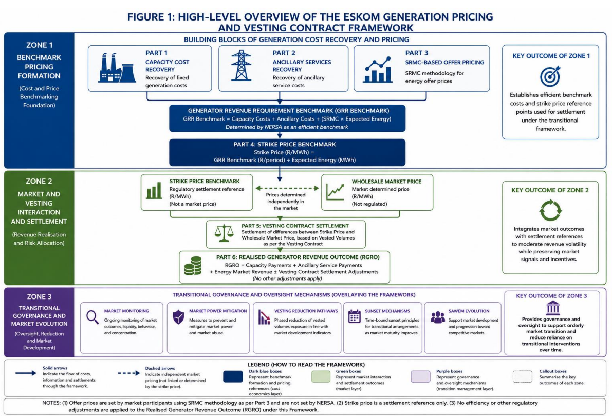
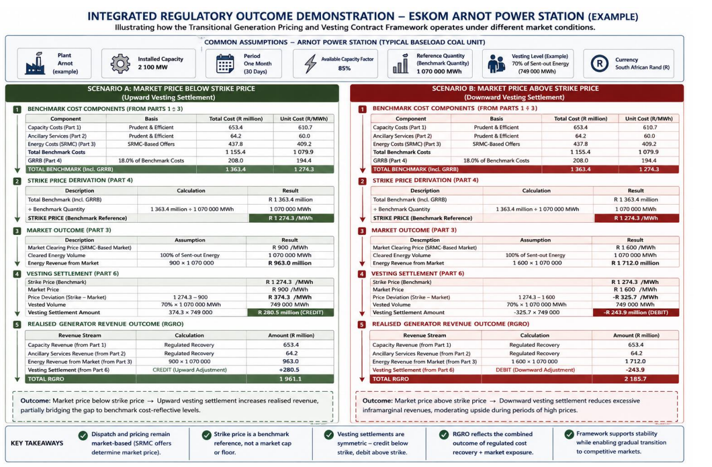

Power · SAWEM · Pricing · System Marginal Price (SMP)
GBR Benchmark Strike Price
The benchmark strike price of the Transitional Generation Pricing and Vesting Contract Framework — the cost-reflective price benchmark NERSA derives from the Generator Revenue Requirement Benchmark (GRR Benchmark) and uses to settle two-way vesting contracts while the South African Wholesale Electricity Market (SAWEM) is still thin. This page breaks down exactly where it comes from, each formula behind it, every number in NERSA’s worked example, and what it means for each type of market participant — including how the answer changes with the capacity type.
Transitional framework Illustrative numbers Not a market price
| Framework | Transitional Generation Pricing and Vesting Contract Framework |
|---|---|
| Authority | National Energy Regulator of South Africa (NERSA) |
| Issued | 20 May 2026 (wholesale price methodology paper issued 18 May 2026) |
| Comment period | Closed 4 August 2026 (extended from 6 July 2026) |
| Public hearing | 19 August 2026, 09:30–12:00, MS Teams — this hearing ran |
| Status | Closed; NERSA consolidating inputs. ELS recommendation, then Energy Regulator decision — no date published |
| Benchmark illustration | Arnot Power Station — 2 100 MW baseload coal, one month (30 days), 85% available capacity factor, 1 070 000 MWh benchmark energy quantity, 70% vesting level (749 000 MWh) |
| Primary PDF | Transitional Generation Pricing and Vesting Contract Framework (May 2026) NERSA |
| Notice PDF | Notice of extension of deadline for written comments NERSA |
| Companion page | Transitional Generation Pricing & Vesting Contract Framework — summary of the same consultation |

1) What the “GBR Benchmark Strike Price” actually is
Short definition
The strike price is a cost-reflective benchmark price, expressed in R/MWh, obtained by dividing NERSA’s efficient generation revenue requirement by the benchmark energy quantity the plant is expected to produce. It is the number the vesting contract settles against: generators are paid the difference when the market clears below it, and pay the difference back when the market clears above it.
What it is not
It is not a market price, a cap, or a floor. Dispatch and clearing prices continue to come from SRMC-based offers in the SAWEM Day-Ahead Market. The strike price is a settlement reference and a monitoring tool only. NERSA is explicit (paras 7.3, 7.7, 7.13, 8.19) that the strike price is a benchmark and a financial reference point — not a guaranteed revenue entitlement.
1.1) Naming — the letters, carefully
NERSA’s document uses three closely related labels, and the working figure adds a fourth. They are not interchangeable, so it is worth fixing them up front:
NERSA’s defined term. Para 7.10: “GRR Benchmark = Capacity Costs + Ancillary Services Costs + Efficient Energy Costs”. The definition list describes it as “the efficient benchmark revenue requirement determined by NERSA for purposes of deriving the strike price under this Framework.”
Para 7.12: “Strike Price (R/MWh) = GRR Benchmark / Benchmark Energy Quantity”. This is the per-MWh benchmark that vesting contracts settle against.
A short handle for the same thing (the benchmark generation revenue reference and the strike price derived from it). NERSA does not use the abbreviation “GBR” anywhere in the framework text; the authoritative terms are GRR Benchmark and strike price benchmark.
In NERSA’s illustrative settlement figure, Part 4 adds a line labelled “GRRB (Part 4)” equal to 18.0% of benchmark costs (R208.0 m on a R1 155.4 m cost base). It is added before dividing by the benchmark energy quantity. The numbered text of Part 4 does not itself spell out an 18% uplift, so treat this line as the Part 4 benchmark allowance as presented in NERSA’s illustration.
Read this page alongside: the System Marginal Price (SMP) page explains how the market price on the other side of the vesting settlement is formed, and Transitional Generation Pricing summarises the consultation itself.
2) Where it comes from
The strike price is the output of a specific regulatory chain, not a market outcome. It is the point where primary legislation, a regulatory revenue determination and the SAWEM market design meet.
Why the benchmark exists at all
Paras 2.1–2.3 and 2.8 set out the problem: South Africa is moving from a vertically integrated, monopolistic supply industry to a competitive market, but during the transition the sector remains structurally concentrated, liquidity is thin, and premature full exposure would expose consumers and investors to excessive volatility and financing uncertainty.
The strike price is the anchor used to stabilise revenue without replacing market dispatch — a “shock absorber” that is transitional by design.
What the benchmark is deliberately built from
- Efficient costs, not actual costs. Para 7.11: the components already embed prudency, efficiency, benchmarking and operational-performance principles.
- Benchmark energy, not actual output. Para 7.12.1: the benchmark energy quantity reflects expected efficient output based on benchmark availability, planned maintenance and system dispatch assumptions — not realised generation.
- MYPD6 continuity. Paras 7.14–7.18 align the strike price with existing regulatory control periods to give predictable settlements during early market development.
3) The four building blocks — and the exact formulas
The framework is deliberately split into parts so that fixed cost recovery never enters the energy offer price. Each part has its own published formula; the strike price is simply the sum of parts 1–3, grossed up as shown in Part 4, divided by benchmark energy.
PART 1 Capacity Cost Recovery
Purpose (para 4.1): recover prudent and efficient fixed generation costs separately from SRMC-based energy pricing, so that fixed costs cannot distort the dispatch merit order, energy price formation stays transparent, and plant stays available during the transition.
Contracting entities (paras 4.7–4.8): supplier = Eskom generation units, plant by plant; counterparty = the Central Purchasing Agency (CPA).
Capacity payment (R/MWh) = ( Return + Depreciation + Fixed O&M + Insurance + Fixed Compliance Costs ± Efficiency Adjustment ) ÷ available capacity
Return = RAB × WACC (para 4.9.1) Depreciation = capital recovered on a cost-reflective basis over the asset's regulatory economic life (para 4.9.2) Fixed O&M = fixed operations and maintenance cost (para 4.9.3) Insurance = prudent premiums (para 4.9.4) Fixed Compliance Costs = statutory, regulatory, licensing and environmental obligations (para 4.9.5)
The availability-linked adjustment (para 4.9.6)
Efficiency Adjustment = Capacity Payment × (Actual Availability / Benchmark Availability)
Generators are paid conditional on availability regardless of dispatch. NERSA ties the metric to the technology: EAF (energy availability factor) for coal, readiness for OCGT, and cycle availability for nuclear — with penalties for non-performance. Benchmark efficiency adjustments are applied ex-ante, so they sit inside the benchmark itself (para 4.10).
PART 2 Ancillary Services Recovery
Purpose (paras 5.1–5.2): fund the system-reliability services that are not energy market transactions — frequency control, reserve management, voltage support, black start and broader system balancing — and recover them separately so they do not distort the energy price.
Categories (paras 5.7–5.8): spinning reserve, frequency response, voltage and reactive power support, black start capability, operating reserves. The list may evolve with system requirements (para 5.9).
Contracting (para 5.10): contracted by the CPA and the System Operator on the basis of capability, availability and response time.
Ancillary Services Costs (R/MWh) =
Availability Payment (R/MW reserved)
+ Utilisation Payment (R/MWh when dispatched)
Availability Payment =
Reserved Capacity (MW)
× Availability Tariff (R/MW/hour)
× Hours Available
Utilisation Payment =
Energy Delivered (MWh)
× Utilisation Tariff (R/MWh)
Two quirks worth knowing
- For strike-price integration, ancillary costs are normalised to a R/MWh equivalent based on expected energy output (footnote 1 to para 5.11) — that is how a R/MW-reserved service ends up as a R/MWh line in the benchmark.
- Ancillary payments are not subject to economic efficiency adjustments in the same way as capacity and energy (para 5.12), because they are procured for reliability. Providers remain subject to technical performance, availability and response requirements (para 5.13).
PART 3 SRMC-Based Offer Pricing (Energy)
Purpose (paras 6.1–6.5): make generators offer at short-run marginal cost so that dispatch reflects the true marginal cost of production. Where fixed or non-marginal costs leak into energy offers, dispatch is distorted, wholesale prices become inefficient and consumers pay for it.
Offer Price (R/MWh) =
SRMC ± Permitted Flexibility Margin
SRMC =
Fuel Cost
+ Variable O&M
+ Emissions
+ Water
Fuel Cost = Heat rate × fuel price
(para 6.6.1)
Variable O&M = consumables, chemicals, lubricants, variable maintenance, ash handling, waste disposal, auxiliaries and other output-varying costs (para 6.6.2) Emissions = Carbon + environmental (para 6.6.3) Water = cooling, treatment, pumping and operational water consumption (para 6.6.4) Permitted Flexibility Margin = limited bidding latitude around efficient SRMC to accommodate operational and technology realities while mitigating excessive market power early on (para 6.6.5)
Para 6.7: the offer price reflects only short-run marginal costs and excludes the fixed generation costs recovered through Parts 1 and 2. All variable cost items remain subject to prudency and efficiency assessment, so only efficiently incurred costs enter the benchmark. NERSA may refine the flexibility margin over time (para 6.12), and it has asked stakeholders whether the margin should be symmetric or asymmetric, and whether it should differ by technology.
PART 4 Strike Price Framework — where the benchmark is actually set
Purpose (para 7.1): establish a cost-reflective benchmark pricing reference used to support vesting contract settlement, moderate revenue volatility, enable transparent monitoring of market outcomes and ease the transition to competition.
Critical boundary (paras 7.3, 7.7, 7.13): the strike price does not determine wholesale market prices, dispatch outcomes, or whether a generator participates. Those continue to arise from SRMC-based offers under Part 3 and prevailing system conditions.
GRR Benchmark =
Capacity Costs (from Part 1)
+ Ancillary Services Costs (from Part 2, normalised to R/MWh)
+ Efficient Energy Costs (from Part 3)
Strike Price (R/MWh) = GRR Benchmark ÷ Benchmark Energy Quantity
Derived primarily from approved benchmark generation revenue requirements under applicable regulatory determinations — explicitly including the approved MYPD6 revenue framework — then adjusted for prudency, efficiency and benchmarking. It therefore reflects benchmark-efficient generation costs rather than actual incurred generator costs.
The benchmark forecast generation output, in MWh, used to derive the strike price. It is built from benchmark plant availability assumptions, expected operational capability, planned maintenance assumptions, system dispatch expectations, forecast market demand conditions and other benchmark operational assumptions. It is a normalised volume and need not match actual realised output.
4) How it is calculated — NERSA’s Arnot worked example, line by line
Parts 7 and 10 of the framework carry a full integrated demonstration on a representative Eskom baseload coal unit: Arnot Power Station, 2 100 MW, one month (30 days), 85% available capacity factor. The whole example runs in the same two directions: market below the strike, and market above the strike.
2 100 MW
85%
1 070 000 MWh
749 000 MWh
4.1) Step 1 — build the benchmark cost components (Parts 1–3)
| Component | Basis | Total cost (R million) | Unit cost (R/MWh) |
|---|---|---|---|
| Capacity Costs (Part 1) | Prudent & efficient | 653.4 | 610.7 |
| Ancillary Services (Part 2) | Prudent & efficient | 64.2 | 60.0 |
| Energy Costs (SRMC) (Part 3) | SRMC-based offers | 437.8 | 409.2 |
| Total Benchmark Costs | 1 155.4 | 1 079.9 | |
| GRRB (Part 4) | 18.0% of benchmark costs | 208.0 | 194.4 |
| TOTAL BENCHMARK (incl. GRRB) | 1 363.4 | 1 274.3 |
Unit costs are simply the R-million figures divided by the 1 070 000 MWh benchmark energy quantity. The 18.0% line is R1 155.4 m × 0.18 = R208.0 m. Note the cost base before the Part 4 allowance — R1 155.4 m, or R1 079.9/MWh — is the value obtained directly from the para 7.10 definition of the GRR Benchmark. Source: NERSA Figure 3 (Part 7 demonstration).
4.2) Step 2 — derive the strike price (Part 4)
| Description | Calculation | Result |
|---|---|---|
| Total Benchmark (incl. GRRB) | R 1 363.4 million | |
| ÷ Benchmark Quantity | 1 363.4 million ÷ 1 070 000 MWh | 1 070 000 MWh |
| STRIKE PRICE (benchmark reference) | R 1 274.3/MWh |
R 653.4 m + R 64.2 m + R 437.8 m = R 1 155.4 m (GRR Benchmark cost base) R 1 155.4 m × 18.0% = R 208.0 m (Part 4 allowance) R 1 155.4 m + R 208.0 m = R 1 363.4 m (total benchmark) R 1 363.4 m ÷ 1 070 000 MWh = R 1 274.3 /MWh (strike price)
The “efficient” part is not decoration. Para 10.8 of the framework states that Arnot’s actual SRMC-related operating expenditure of approximately R470 million was adjusted down to a benchmark-efficient SRMC allowance of approximately R437.8 million — a disallowance of roughly R32 million in the month. Fuel, variable O&M and water are each tested against benchmark efficiency (paras 10.8–10.9). Only the benchmark-efficient allowance enters the GRR Benchmark, which is why the recovered strike is lower than the plant’s actual incurred cost.
4.3) Step 3 — market outcome, settlement and realised revenue (Parts 3, 6, 5)
Both scenarios keep the same plant, the same costs and the same strike price. Only the wholesale market clearing price changes.
Scenario A — market below the strike (R900/MWh)
| Market clearing price | R 900 /MWh |
| Cleared energy volume | 1 070 000 MWh |
| Energy revenue from market | R 963.0 m |
| Strike price (benchmark) | R 1 274.3 /MWh |
| Price deviation (Strike − Market) | R 374.3 /MWh |
| Vested volume (70%) | 749 000 MWh |
| Vesting settlement | R 280.5 m CREDIT |
Because the market cleared below the benchmark, the settlement is an upward adjustment — a credit to the generator on vested volumes.
Scenario B — market above the strike (R1 600/MWh)
| Market clearing price | R 1 600 /MWh |
| Cleared energy volume | 1 070 000 MWh |
| Energy revenue from market | R 1 712.0 m |
| Strike price (benchmark) | R 1 274.3 /MWh |
| Price deviation (Strike − Market) | −R 325.7 /MWh |
| Vested volume (70%) | 749 000 MWh |
| Vesting settlement | −R 243.9 m DEBIT |
Because the market cleared above the benchmark, the settlement is a downward adjustment — a debit that clips excess inframarginal rent on vested volumes.
Realised Generator Revenue Outcome (RGRO) — the four revenue streams
Para 8.11 defines the RGRO as
Capacity Payments + Ancillary Service Payments + Energy Market Revenue ± Vesting Contract Settlement Adjustments,
which maps directly onto Parts 1, 2, 3 and 6 (para 8.12).
| Revenue stream | Calculation | Scenario A (R m) | Scenario B (R m) |
|---|---|---|---|
| Capacity revenue (Part 1) | Regulated recovery | 653.4 | 653.4 |
| Ancillary services revenue (Part 2) | Regulated recovery | 64.2 | 64.2 |
| Energy revenue from market (Part 3) | 900 × 1 070 000 / 1 600 × 1 070 000 | 963.0 | 1 712.0 |
| Vesting settlement (Part 6) | Credit / (Debit) adjustment | +280.5 | −243.9 |
| TOTAL RGRO | 1 961.1 | 2 185.7 |
Rounding note: the figures above are exactly as published in NERSA’s demonstration. Recomputing from the rounded strike price gives Scenario A a settlement of about R280.4 m (374.3 × 749 000 = R280 350 700) rather than R280.5 m; Scenario B reconciles exactly (325.7 × 749 000 = R243 949 300). The difference is presentation rounding only.
What the two scenarios actually prove
- Dispatch stays market-based. The generator offered at SRMC and was dispatched on merit (para 10.13).
- The strike is a reference, not a cap or a floor. Neither scenario saw the strike price set the market price.
- Settlement is symmetric (para 9.13): credit when market < strike, debit when market > strike.
- RGRO still moves with the market. Between the two scenarios realised revenue swings by roughly R224.6 m even with 70% of output vested — the generator keeps real exposure.
Why only 70% is vested
The vesting volume is, in NERSA’s own words, “the primary policy lever through which NERSA manages the pace and nature of the transition” (para 9.15). In this illustration 70% of sent-out energy is vested and 30% is pure market exposure. The table in section 8 shows the options NERSA put out for consultation.

5) How the strike price is actually used — the vesting settlement
The strike price has exactly one operational job under the framework: it is the fixed leg of a two-way financial settlement on a defined slice of output. Part 6 sets the formula.
Settlement = (Strike Price − Market Price) × Vesting Volume
where
Strike Price = the Part 4 cost-reflective benchmark
Market Price = the wholesale market clearing price
formed from SRMC offers (the SAWEM SMP)
Vesting Volume = the defined portion of output subject to
vesting settlement
The sign is the whole mechanism
- Market below strike (para 9.11): positive result = upward financial adjustment. The generator is topped up toward the benchmark.
- Market above strike (para 9.12): negative result = downward financial adjustment. Excess inframarginal rent is clawed back.
- Symmetric by design (para 9.13): the same contract credits below and debits above — it is not a one-way subsidy.
5.1) What the strike price does not protect against
This is the part most often misread. Paras 8.17 and 8.19–8.21 are unambiguous: because the strike price is a benchmark and not a guaranteed entitlement, generators keep real risk even with a vesting contract in place.
Only the vesting volume is settled to the strike. The remainder earns whatever the market pays (para 8.17.1). In the Arnot illustration that is 30% of sent-out energy.
The capacity payment is availability-linked (para 4.9.6), so poor EAF, readiness or cycle availability feeds straight through to revenue (para 8.17.2).
The strike is divided by a benchmark energy quantity. If actual output falls short of the benchmark, the generator carries the difference (para 8.17.3).
Dispatch still follows the merit order, and commercial and contractual risks of participating in the wholesale market remain with the generator (paras 8.17.4, 8.20.4–8.20.5).
Where the market price comes from: the “Market Price” in the settlement formula is the SAWEM System Marginal Price — the shadow price of the energy balance constraint in the Day-Ahead Market co-optimisation. See the System Marginal Price (SMP) page for how that is formed, including constrained-on/off payments, lost opportunity payments and the single national pricing area.
6) Does it differ by capacity type? Yes — in two distinct ways
The framework is written to be technology-neutral in its arithmetic but technology-specific in its application. Two things change with the plant type:
1. The availability metric changes
Para 4.9.6 links the capacity payment to a technology-specific performance measure: EAF (energy availability factor) for coal, readiness for OCGT, and cycle availability for nuclear, with penalties for non-performance. Because the efficiency adjustment is applied ex-ante (para 4.10), a different metric means a different benchmark cost for the same physical availability. Whether the benchmark availability approach is right across technologies is explicitly open — it is Stakeholder Question 1.
2. The mix of Parts 1–3 changes completely
The GRR Benchmark is the sum of three cost pools. A baseload coal station is capacity-heavy; a peaking diesel unit is fuel-heavy; a nuclear unit is capacity-heavy with a very low fuel component. Since Part 4 divides that sum by a benchmark energy quantity, two plants with identical total costs but very different expected output get very different R/MWh strike prices. In the Arnot illustration the capacity pool alone was R653.4 m of the R1 155.4 m cost base — roughly 57%.
6.1) How each capacity type lands in the benchmark
| Capacity type | Availability metric (para 4.9.6) | Dominant benchmark component | Effect on the strike price | Market / dispatch character |
|---|---|---|---|---|
| Baseload coal e.g. the Arnot illustration, 2 100 MW |
EAF (energy availability factor) | Part 1 capacity, with a material Part 3 energy component | High strike, mostly fixed-cost recovery; the energy leg was R409.2/MWh of the R1 274.3/MWh strike | Runs baseload, so exposure to inframarginal rent is largest — this is where vesting matters most |
| OCGT / peaking e.g. Ankerlig, Gourikwa |
Readiness | Part 1 capacity; very small expected energy output | Very high R/MWh strike because the benchmark energy denominator is small | Dispatched rarely; the availability payment, not energy, is the business model |
| Nuclear | Cycle availability | Part 1 capacity — large asset base, long regulatory life | High strike, low SRMC; depreciation and return dominate | Baseload with low marginal cost, so inframarginal rent is high and vesting does real work |
| Hydro / pumped storage | Availability | Part 1 plus a larger Part 2 ancillary share (reserve, voltage support, black start) | Moderate strike; ancillary normalised to R/MWh lifts the benchmark relative to an energy-only unit | Peaking and system support; revenue is energy plus reserve payments |
| Gas CCGT | Availability | Part 3 fuel-driven SRMC alongside Part 1 | Strike tracks the gas price through Heat rate × fuel price |
Mid-merit; highly sensitive to fuel and emissions cost assumptions |
| Diesel peakers | Readiness | Part 3 fuel dominates | Very high energy component; a high strike even on modest capacity cost | Dispatched only at the top of the merit order |
| Wind / solar PV (VRE) | Availability / energy yield | Not part of the Parts 1–4 Eskom benchmark | No Parts 1–4 benchmark strike is derived for these units | Near-zero SRMC; legacy REIPPP output is handled through the CPA’s legacy contracts and CfDs, not this benchmark |
Important scope limit. Para 4.7 identifies the supplier under Part 1 as “Eskom generation units (plant-by-plant)” and para 4.8 names the CPA as counterparty. The benchmark strike price is therefore built per Eskom plant. A wind or solar farm selling under a legacy REIPPP PPA does not receive a Parts 1–4 benchmark strike — it settles on its own contracted price, with the CPA absorbing the difference and passing it through the legacy charge. Individually negotiated bilateral contracts are not prescribed by this framework either (para 2.21).
7) What it means for each market participant
The benchmark strike price is not applied uniformly. It touches different participants in fundamentally different ways — and for some participants it has no direct effect at all.
Upstream — the generation side
- Eskom Generation stations (the vesting counterparty). Each station signs a vesting contract with the CPA, plant by plant (paras 4.7–4.8). Its revenue becomes Capacity Payments + Ancillary Service Payments + Energy Market Revenue ± Vesting Settlement (para 8.11). The capacity leg is availability-linked, so EAF/readiness/cycle availability performance directly moves the money (para 4.9.6).
- Legacy REIPPP IPPs. They sit on their existing PPAs, not on a Parts 1–4 benchmark. The CPA is their counterparty and trades their output into the DAM; the difference between the contracted price and the market price flows through the legacy charge.
- New / merchant generators and self-generators. No benchmark strike and no vesting contract under this framework. They simply receive the market price and carry full merchant risk. For them the strike price is a monitoring reference only.
- Bilateral and financial counterparties. Individually negotiated bilateral contracts are explicitly outside the framework’s scope (para 2.21).
Downstream — the demand side
- Eskom Distribution. Enters a downstream vesting contract with the CPA in which the strike price becomes the agreed wholesale active energy price — in practice the current NERSA-regulated energy tariff (para 12.14). The proposed term is five years (Stakeholder Question 9).
- Municipalities. Two options (para 12.15): (i) remain an Eskom Distribution customer at a regulated price linked to the wholesale active energy strike price — which does not prevent them from procuring from IPPs bilaterally or generating themselves; or (ii) become a market participant, in which case the CPA provides a five-year vesting contract to dampen the price volatility of the electricity they buy.
- Any licensed distributor entering the market. Must conclude a vesting contract with the CPA before participating. The hedge covers the difference between the SMP and the Wholesale Price for Energy, and the shortfall or over-recovery goes into the legacy charge (para 12.17).
- Consumers. They do not see the strike price on a bill, but they are the ultimate bearer of the net vesting position through the legacy charge, and the ultimate beneficiary of the downstream price stabilisation.
7.1) Participant matrix
| Participant | Gets a benchmark strike price? | How the strike price reaches them | Their residual risk |
|---|---|---|---|
| Eskom Generation station | Yes — one per plant | Primary settlement reference for the vesting contract; the strike is the fixed leg of (Strike − Market) × Vesting Volume |
Market price on unvested volumes; availability performance; volume against the benchmark; dispatch and commercial risk (paras 8.17, 8.20) |
| Central Purchasing Agency (NTCSA) | No — it is the counterparty | Pays capacity, ancillary and vesting settlements; registers as BRP and sells the energy into the DAM at the SMP | The net position between contracted benchmark prices and market prices, recovered through the legacy charge |
| Legacy REIPPP IPP | No | Settles on its own contracted PPA price with the CPA as counterparty | Its own availability and volume performance under the PPA |
| New / merchant generator | No | Receives the market price only; the strike is purely a monitoring benchmark | Full merchant risk: price, volume, dispatch |
| Eskom Distribution | Yes — as the downstream vesting price | The strike becomes the agreed wholesale active energy price in a five-year vesting contract with the CPA | Time-of-use and volume profile risk relative to the hedged volume |
| Municipality | Conditionally | Option (i): regulated price linked to the strike as an Eskom Distribution customer. Option (ii): five-year CPA vesting contract as a market participant | Depends on the option chosen; municipal own-generation and bilateral procurement remain permitted |
| Licensed distributor entering the market | Yes — via a mandatory vesting contract | Hedge covers the difference between the SMP and the Wholesale Price for Energy | Shortfall or over-recovery is trued up through the legacy charge |
| Consumers | No direct exposure | Benefit from downstream price stability; bear the net legacy charge | Regulated price outcomes and the legacy charge |
| Regulator (NERSA) | Sets it | Determines the benchmark, approves the vesting volumes, monitors conduct and reviews or sunsets the mechanism | Regulatory risk if the transition is mis-sequenced (see paras 11.4–11.6) |
The asymmetry that matters most. Capacity-type decides how much of the strike comes from fixed cost recovery; participant type decides whether the strike applies at all. An Eskom coal station gets a plant-specific strike and a vesting contract; a wind farm on a legacy PPA does not; a merchant gas plant does not; a distributor gets it as a downstream hedge price.
8) The levers: vesting volume, reduction pathway and sunset
Two numbers control how much the benchmark strike price actually matters: the strike price (the centre of the settlement) and the vesting volume (how much output is settled against it). NERSA is explicit that the vesting volume is the primary policy lever for pacing the transition (paras 9.15–9.18): higher vesting means more stabilisation and stronger market-power mitigation but less exposure to competitive pricing; lower vesting means the reverse.
8.1) The four illustrative vesting options (paras 9.22–9.25)
| Option | Initial vesting | Approach | Trade-off as described by NERSA |
|---|---|---|---|
| A | 100% of sent-out energy | Full stabilisation | Maximum revenue stability and the strongest mitigation of structural market power, but significantly delays market liquidity and competitive price discovery |
| B | 80% | Conservative stabilisation | Substantial stabilisation and strong market-power mitigation while allowing limited exposure and gradual liquidity development |
| C (used in the illustration) | 70% | Balanced transition | Balances revenue stabilisation and market-power mitigation with gradual exposure to competitive price formation and liquidity development |
| D | 60% | Accelerated market development | Faster exposure to competitive pricing and liquidity, but greater exposure to short-term market volatility during transition |
8.2) The illustrative reduction pathway (Table 2, para 9.46)
NERSA ties the pace of vesting reduction to the growth of non-Eskom installed capacity. The table below is reproduced from the framework and is expressly for consultation — it is not a predetermined regulatory decision.
| Non-Eskom installed capacity | Vesting volume adjustment | Example vesting volume (if the initial level is 70%) | Market implication |
|---|---|---|---|
| Below 30% | No reduction | 70% | Strong stabilisation during early market development |
| 30% | Reduce by 10 percentage points | 60% | Increased exposure to market pricing |
| 40% | Further reduction of 10 percentage points | 50% | Greater price discovery and liquidity |
| 50% | Sunset triggered | 0% | Full market pricing |
Sunset principles (paras 9.48–9.50)
Vesting contracts are transitional instruments, not permanent market structures or permanent price regulation. They may carry defined sunset periods, maximum implementation durations, periodic regulatory review and market-development triggers. Reduction decisions may consider the level of market concentration, non-Eskom generation participation, market liquidity, observed pricing outcomes and broader SAWEM reform (paras 9.43, 9.49).
Monitoring and market-power mitigation (Part 8)
NERSA may monitor pricing behaviour, participation patterns, liquidity, vesting outcomes, concentration and volatility (para 11.7), and may look specifically for economic withholding, physical withholding, predatory pricing, artificial manipulation and excessive concentration (para 11.9).
The framework’s own risk table (Table 3) pairs each risk with a mitigation: market power with vesting plus surveillance, economic withholding with availability-linked payments plus monitoring, physical withholding with benchmark availability requirements, and predatory pricing with the sunset pathway and progressive vesting reduction.
Review and evolution (paras 7.14–7.27). The strike price is determined for a defined regulatory control period, initially aligned with the approved MYPD6 period, to give predictable settlements. NERSA may review it at the end of a control period, having regard to market development, benchmark cost assumptions, operational performance trends, liquidity, new capacity entry and broader SAWEM reform. NERSA also acknowledges that a benchmark derived from existing regulatory revenue structures may differ from prevailing SRMC-based offer prices and observed market prices in the early stages.
9) Sources — where every figure and formula comes from
| Document | Type | What this page took from it |
|---|---|---|
|
Transitional Generation Pricing and Vesting Contract Framework
NERSA, May 2026 (62 pages) |
NERSA | The primary source for everything on this page. Paras 1.2–1.10 (statutory mandate); 2.12 and 3.5 (introduction of the GRR Benchmark); Part 1 paras 4.9–4.10 (capacity formula and availability metric); Part 2 paras 5.11–5.13 (ancillary formula and the R/MWh normalisation); Part 3 paras 6.6–6.7 (SRMC offer price); Part 4 paras 7.8–7.27 (GRR Benchmark definition, strike price formula, control period and review); Part 5 paras 8.11–8.21 (RGRO and residual risk); Part 6 paras 9.10–9.52 (settlement, vesting options A–D, reduction pathway, sunset); Part 7 paras 10.7–10.13 (the Arnot demonstration and all its numbers); Part 8 paras 11.7–11.16 (monitoring, market power, risk table); Part 9 paras 12.1–12.17 (downstream vesting, Eskom Distribution and the two municipal options). |
|
Notice of extension of deadline for written comments
NERSA |
NERSA | Consultation timeline: papers published 18 and 20 May 2026; comment deadline extended to 4 August 2026; public hearings 14 and 19 August 2026. |
|
SAWEM Market Specification
NTCSA Market Operator, April 2024 |
Spec | The market context the benchmark operates in: the multi-market model, the CPA’s role, vesting and legacy contracts, and the CfD mechanics (strike price versus reference price). |
|
SAWEM Market Code
Rev 2.3, February 2026 |
Code | The market price on the other side of the settlement: SMP determination, pay-as-clear settlement, constrained-on/off and lost opportunity payments. |
|
SAWEM CPA
Central Purchasing Agency |
CPA | The CPA’s vesting-contract functions, the legacy charge mechanism and the pricing-area design that sits behind the downstream arrangements. |
|
Energy Council consultation page
External |
External | The public consultation bundle: the framework paper, the wholesale price consultation paper and the Energy Council concept note on the pricing assessment approach. |
Two NERSA figures are reproduced on this page: Figure 1 (the high-level framework overview, which is the source of the Zone 1 “GBR benchmark strike price” diagram) and Figure 3 (the integrated Arnot outcome demonstration). Both are from the May 2026 framework consultation paper.
10) Caveats and the bottom line
Read these before quoting any number
- Everything here is proposed, not decided. The framework was out for public comment (closed 4 August 2026) and the hearing ran on 19 August 2026. There is no published decision date, and NERSA states that the illustrative options and pathways are for consultation and do not represent predetermined regulatory outcomes (paras 9.21, 9.46).
- The Arnot figures are illustrative. They demonstrate the mechanism on one representative baseload coal unit for one month. They are not Arnot’s actual tariff and not a general strike price.
- The 18.0% Part 4 allowance appears in the figure only. The numbered text defines the GRR Benchmark as the sum of Parts 1–3 and does not itself set out an 18% uplift, so treat that line as the figure’s presentation of the Part 4 benchmark allowance.
- “GBR” is this page’s label. NERSA’s terms are GRR Benchmark and strike price benchmark. The figure additionally uses the abbreviation “GRRB”.
Where it comes from — one line
From the Electricity Regulation Act mandate, through the approved MYPD6 benchmark generation revenue, through prudency and efficiency adjustments in Parts 1 to 3, into the GRR Benchmark, and finally divided by a benchmark energy quantity to give the R/MWh strike price that Part 6 settles against.
How it is calculated — one line
(Capacity + Ancillary + Efficient Energy) × (1 + Part 4 allowance)
÷ Benchmark Energy Quantity = Strike Price (R/MWh)
| The five things to remember | Why |
|---|---|
| 1. It is a benchmark, not a price | Dispatch and clearing prices still come from SRMC offers under Part 3. The strike price sets no market price, no cap and no floor (paras 7.3, 7.7, 7.13). |
| 2. It is built from efficient, not actual, costs | Parts 1–3 embed prudency and efficiency assessment, so the benchmark deliberately excludes inefficient spend — in the illustration roughly R32 m of Arnot’s actual SRMC opex was disallowed. |
| 3. It settles symmetrically, not one-way | (Strike − Market) × Vesting Volume pays the generator when the market is low and claws revenue back when the market is high (paras 9.11–9.14). |
| 4. It is technology-sensitive and plant-specific | Capacity cost recovery is linked to EAF (coal), readiness (OCGT) or cycle availability (nuclear), and the strike is derived per Eskom plant — so two stations with different cost structures and expected output get different strikes. |
| 5. It is designed to disappear | Vesting volumes reduce as non-Eskom capacity grows, with a sunset trigger, and the whole mechanism is a transitional instrument rather than a permanent market structure (paras 9.28–9.50). |